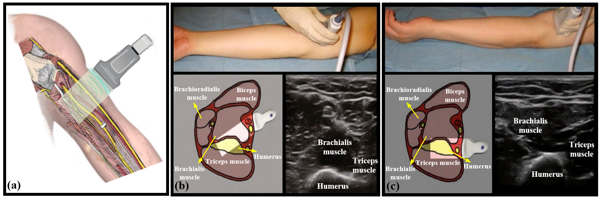
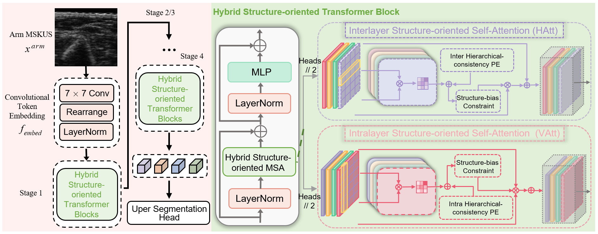
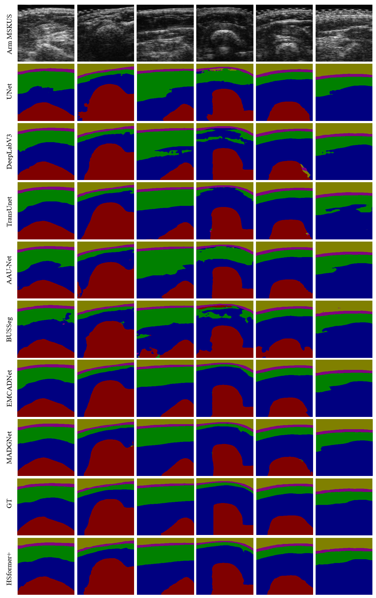
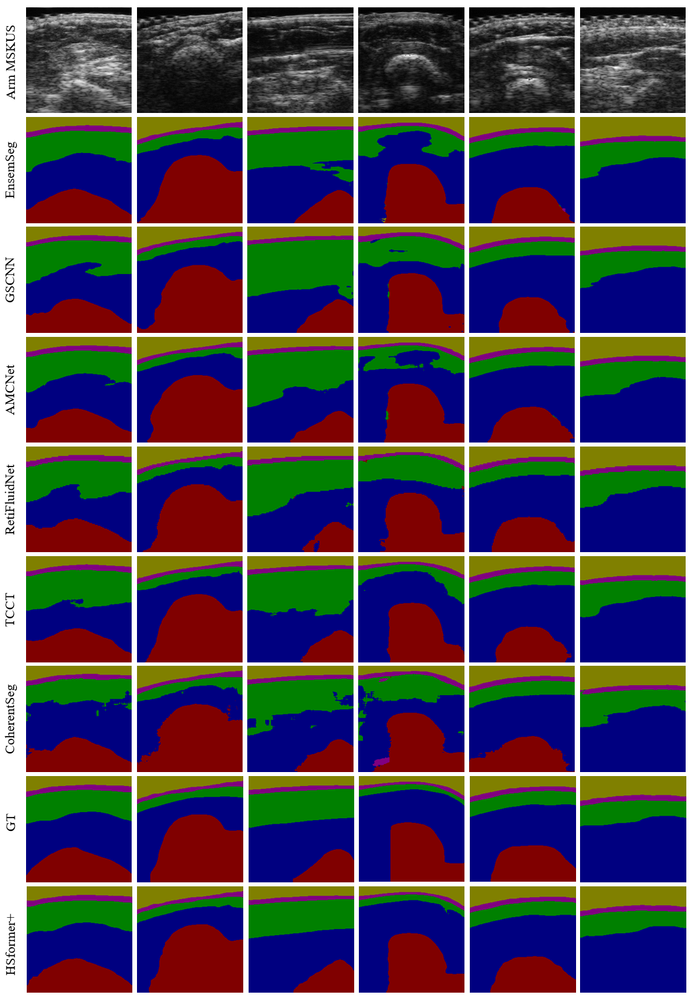

Abstract
Segmenting complex and hybrid layers, including skin, subcutaneous fat, skeletal muscle, and bone in arm musculoskeletal ultrasound (MSKUS), is extremely crucial for diagnosing and monitoring Breast-Cancer-Related Lymphedema (BCRL). Nevertheless, previous research has primarily focused on individual muscle or bone segmentation in MSKUS, overlooking the horizontal and curvilinear hybrid morphologies that characterize these structures. To address this limitation, we propose a novel hybrid structure-oriented Transformer with structural prior (HSformer+) to promote structural understanding, a framework capable of simultaneously segmenting multilayer hybrid structures. Specifically, HSformer+ first combines hierarchical-consistency relative position encoding to impose structural morphology bias within local windows. Then we propose a structure-biased constraint for attention calculation, innovatively enhancing feature representation. Ultimately, a structure-oriented objective function is introduced to constrain the spatial location and tissue distribution. Our experiments on a public arm MSKUS dataset demonstrate that HSformer+ achieves state-of-the-art segmentation performance. Further experiments on a private arm MSKUS dataset prove that our method has a strong generalization to clinical small-scale MSKUS datasets.

Examples of arm MSKUS with a hybrid and hierarchical structure, including horizontal layers paralleling to the skin surface and curvilinear layers.
Overall Framework
In light of the aforementioned issues and with reference to above figure, we propose a novel hybrid structure-oriented Transformer with structural prior (HSformer+) for arm MSKUS segmentation. This model simultaneously captures effective feature representations for both the correlations and differences of interlayer and intralayer structures from horizontal and vertical perspectives. To address the challenge of curvilinear structures due to the inherent characteristics of the arm MSKUS and the effect of BCRL, hierarchical-consistency relative position encoding (HCPE) imposes structure bias onto the elements within the local window. Meanwhile, to enhance layer differentiation and emphasize critical features, a structure-biased constraint (SBC) is developed to calculate attention weights. Additionally, we design a novel structure-oriented loss based on spatial location and tissue distribution in arm MSKUS images.

Illustration of the proposed HSformer+ framework.
Comparison Experiments on the Public Arm MSKUS Datasets
Considering the significant characteristics of arm MSKUS segmentation, we design three types of comparative experiments to verify the effectiveness of our model from different perspectives:
- We compare HSformer+ with nine representative image segmentation models: in addition to UNet, Attention UNet, UNet++, DeepLabV3, TransUNet, there also AAU-Net, BUSSeg EMCADNet and MADGNet.
- We select four frameworks recently developed for MSKUS images segmentation, such as GSCNN, AMCNet, EnsemSeg and SpineSeg.
- Furthermore, comparisons are made between HSformer+ and four existing algorithms designed for segmentation of layer-structure medical images, involving TCCT, CoherentSeg, RetiFluidNet and Y-Net.
Table I - Comparisons with nine representative image segmentation models. The green area indicates five classic segmentation models, the blue area represents two recent US segmentation architectures, and the orange area represents the latest SOTA methods.
| Layer Structure |
Method |
U_Net |
Attention UNet |
UNet++ |
DeeplabV3 |
TransUnet |
AAU-Net |
BUSSeg |
EMCADNet |
MADGNet |
HSformer+ |
| Gel |
DSC |
0.9273 |
0.9117 |
0.9415 |
0.9466 |
0.9694 |
0.9515 |
0.9587 |
0.9640 |
0.9332 |
0.9810 |
| JI |
0.8659 |
0.8417 |
0.8943 |
0.9044 |
0.9477 |
0.9304 |
0.9419 |
0.9319 |
0.9120 |
0.9639 |
| HD |
2.1875 |
3.1188 |
2.2773 |
2.4916 |
2.3939 |
1.9393 |
2.0603 |
1.9358 |
2.2794 |
1.7481 |
| ASD |
0.4734 |
0.5312 |
0.4980 |
0.5429 |
0.5429 |
0.4269 |
0.4563 |
0.4297 |
0.5330 |
0.3852 |
| Skin |
DSC |
0.7846 |
0.7875 |
0.7844 |
0.7925 |
0.8492 |
0.8319 |
0.8029 |
0.8261 |
0.8015 |
0.8896 |
| JI |
0.6602 |
0.6581 |
0.6563 |
0.6702 |
0.7600 |
0.7544 |
0.6777 |
0.7168 |
0.6723 |
0.8076 |
| HD |
8.8346 |
4.4768 |
4.1263 |
4.1263 |
4.2186 |
3.2168 |
3.2383 |
2.3533 |
2.6547 |
2.8145 |
| ASD |
1.2272 |
1.1527 |
1.3511 |
1.2235 |
1.0528 |
1.1357 |
1.1324 |
1.1137 |
1.2286 |
0.9740 |
| Subcutaneous Fat |
DSC |
0.8349 |
0.8517 |
0.8515 |
0.8522 |
0.8572 |
0.8798 |
0.8842 |
0.8956 |
0.9021 |
0.9155 |
| JI |
0.7345 |
0.7584 |
0.7570 |
0.7609 |
0.7679 |
0.7986 |
0.8031 |
0.8208 |
0.8299 |
0.8519 |
| HD |
18.2158 |
14.3111 |
15.0515 |
14.2644 |
13.9462 |
13.7089 |
12.8496 |
12.1448 |
11.6314 |
11.3129 |
| ASD |
4.1608 |
3.1729 |
3.8462 |
3.4544 |
3.4454 |
3.2277 |
2.9266 |
2.8586 |
2.9162 |
2.6104 |
| Muscles |
DSC |
0.8081 |
0.8300 |
0.8376 |
0.8428 |
0.8687 |
0.8807 |
0.8694 |
0.9009 |
0.8740 |
0.9084 |
| JI |
0.7039 |
0.7319 |
0.7421 |
0.7618 |
0.7860 |
0.7882 |
0.7866 |
0.8071 |
0.8091 |
0.8407 |
| HD |
32.1766 |
31.1278 |
26.2814 |
24.9647 |
25.7427 |
24.585 |
25.9433 |
23.6565 |
23.8916 |
22.6557 |
| ASD |
6.8631 |
5.3731 |
5.8816 |
5.6443 |
5.9926 |
5.0030 |
5.2813 |
5.6278 |
5.3866 |
4.5712 |
| Bones |
DSC |
0.7891 |
0.7999 |
0.8234 |
0.8272 |
0.8192 |
0.8497 |
0.8695 |
0.8808 |
0.8701 |
0.9028 |
| JI |
0.6934 |
0.7036 |
0.7380 |
0.7502 |
0.7522 |
0.7824 |
0.8030 |
0.8214 |
0.7970 |
0.8325 |
| HD |
34.1490 |
38.6285 |
27.7593 |
26.3163 |
29.6025 |
26.0241 |
28.3172 |
22.1648 |
23.4392 |
24.6789 |
| ASD |
6.7805 |
6.8423 |
5.6341 |
5.0575 |
6.2708 |
4.7145 |
4.7353 |
4.4625 |
4.4625 |
4.3162 |
| Mean |
DSC |
0.8288 |
0.8361 |
0.8476 |
0.8533 |
0.8711 |
0.8771 |
0.8767 |
0.8934 |
0.8834 |
0.9194 |
| JI |
0.7315 |
0.7387 |
0.7575 |
0.7658 |
0.8021 |
0.7955 |
0.7905 |
0.8214 |
0.7970 |
0.8593 |
| HD |
18.1127 |
13.1245 |
15.0992 |
14.3114 |
14.9328 |
13.3448 |
14.3114 |
12.6454 |
12.6484 |
12.6420 |
| ASD |
3.9010 |
3.4144 |
3.4422 |
3.1845 |
3.4609 |
2.9015 |
2.9063 |
2.9048 |
2.9512 |
2.5714 |
Table II Comparisons with eight MSKUS or layer-structure segmentation models. The blue area displays four representative MSKUS segmentation models, the green area demonstrates four layer-structure segmentation architectures.
| class |
indicator |
SpineSeg |
EnsemSeg |
GSCNN |
AMCNet |
RetiFluidNet |
Y-Net |
TCCT |
CoherentSeg |
HSformer+ |
| Gel |
DSC |
0.8970 |
0.9372 |
0.9494 |
0.9170 |
0.9397 |
0.9367 |
0.9368 |
0.9051 |
0.9810 |
| JI |
0.8147 |
0.8840 |
0.9096 |
0.8531 |
0.8897 |
0.8842 |
0.8861 |
0.8319 |
0.9639 |
| HD |
4.0013 |
2.5436 |
2.3418 |
2.3733 |
2.1029 |
2.2984 |
2.5272 |
2.4552 |
1.7481 |
| ASD |
0.8489 |
0.5352 |
0.5210 |
0.5251 |
0.4545 |
0.5116 |
0.5517 |
0.4949 |
0.3852 |
| Skin |
DSC |
0.7279 |
0.8407 |
0.7903 |
0.7987 |
0.8280 |
0.8110 |
0.7976 |
0.7823 |
0.8896 |
| JI |
0.5822 |
0.7417 |
0.6632 |
0.6749 |
0.7242 |
0.6858 |
0.6736 |
0.6549 |
0.8076 |
| HD |
5.1969 |
3.5243 |
3.5666 |
3.4505 |
3.3333 |
3.5590 |
3.9399 |
3.9573 |
2.8145 |
| ASD |
1.9822 |
1.1842 |
1.1818 |
1.1367 |
1.0845 |
1.1886 |
1.2596 |
1.2250 |
0.9740 |
| Subcutaneous Fat |
DSC |
0.8451 |
0.8739 |
0.8604 |
0.8680 |
0.8648 |
0.8676 |
0.8642 |
0.8356 |
0.9155 |
| JI |
0.7470 |
0.7895 |
0.7711 |
0.7714 |
0.7819 |
0.7742 |
0.7742 |
0.7292 |
0.8519 |
| HD |
24.9700 |
15.1477 |
15.6484 |
14.8270 |
15.6120 |
15.5703 |
15.6439 |
20.9985 |
11.3129 |
| ASD |
5.8961 |
3.5257 |
3.8932 |
3.4860 |
3.4949 |
3.4456 |
4.2678 |
4.1733 |
2.6104 |
| Muscles |
DSC |
0.8556 |
0.8498 |
0.8430 |
0.8524 |
0.8654 |
0.8621 |
0.8617 |
0.8090 |
0.9084 |
| JI |
0.7558 |
0.7658 |
0.7572 |
0.7630 |
0.7859 |
0.7784 |
0.7765 |
0.6869 |
0.8407 |
| HD |
25.5053 |
27.4446 |
26.2865 |
28.0218 |
25.6670 |
27.0126 |
25.8736 |
48.0643 |
22.6557 |
| ASD |
5.1969 |
5.5926 |
5.3095 |
6.0242 |
5.4491 |
5.4576 |
4.9813 |
8.9130 |
4.5712 |
| Bones |
DSC |
0.8347 |
0.8453 |
0.8149 |
0.8252 |
0.8312 |
0.8459 |
0.8458 |
0.7921 |
0.9028 |
| JI |
0.7396 |
0.7662 |
0.7287 |
0.7339 |
0.7472 |
0.7535 |
0.7557 |
0.6751 |
0.8325 |
| HD |
31.7518 |
26.2052 |
28.4942 |
28.2102 |
29.0166 |
27.9990 |
27.1545 |
47.1655 |
24.6789 |
| ASD |
6.5026 |
5.1348 |
5.5064 |
5.0220 |
5.6171 |
4.5494 |
5.6406 |
8.2199 |
4.3162 |
| Mean |
DSC |
0.8320 |
0.8693 |
0.8516 |
0.8523 |
0.8658 |
0.8646 |
0.8612 |
0.8248 |
0.9194 |
| JI |
0.7278 |
0.7894 |
0.7659 |
0.7619 |
0.7765 |
0.7764 |
0.7557 |
0.7156 |
0.8593 |
| HD |
18.2850 |
14.9820 |
15.2675 |
15.1007 |
15.1463 |
15.2878 |
15.2078 |
24.5281 |
12.6420 |
| ASD |
4.0798 |
3.2611 |
3.4253 |
3.1081 |
3.2200 |
3.3034 |
3.4015 |
4.6046 |
2.5714 |


Segmentation results predicted by seventeen models to verify the effectiveness of HSformer+ from different perspectives. Yellow, pink, green, blue and red respectively represent the segmentation of gel, skin, fat, muscle and bone layers.